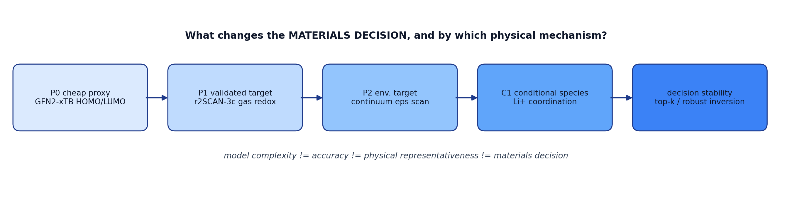
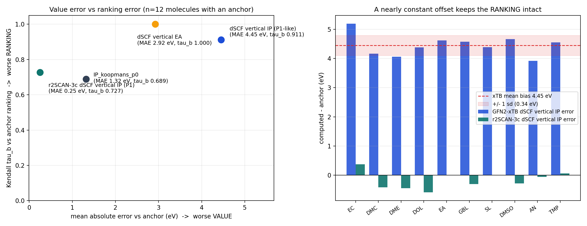
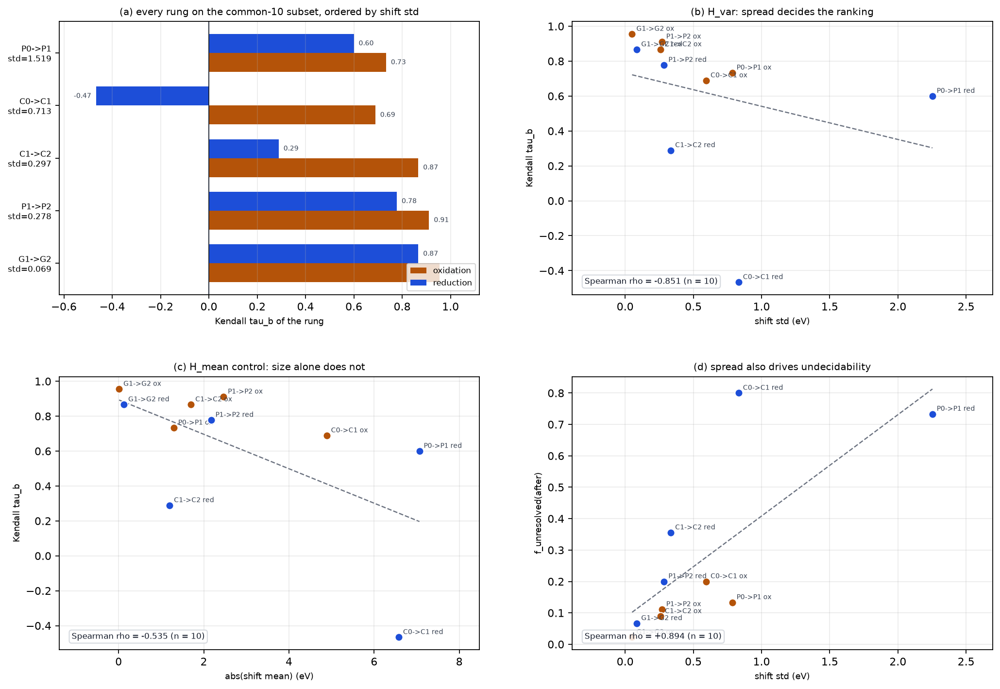
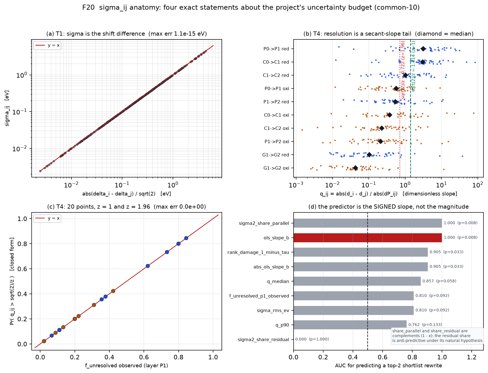
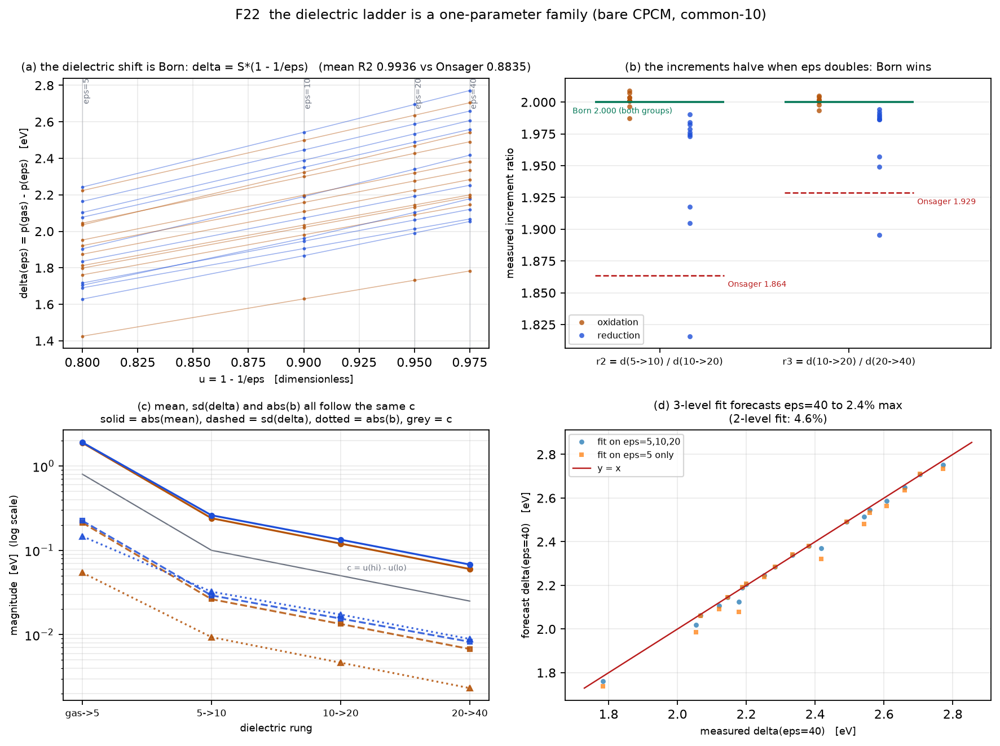
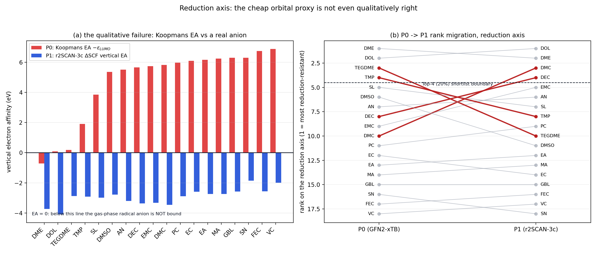
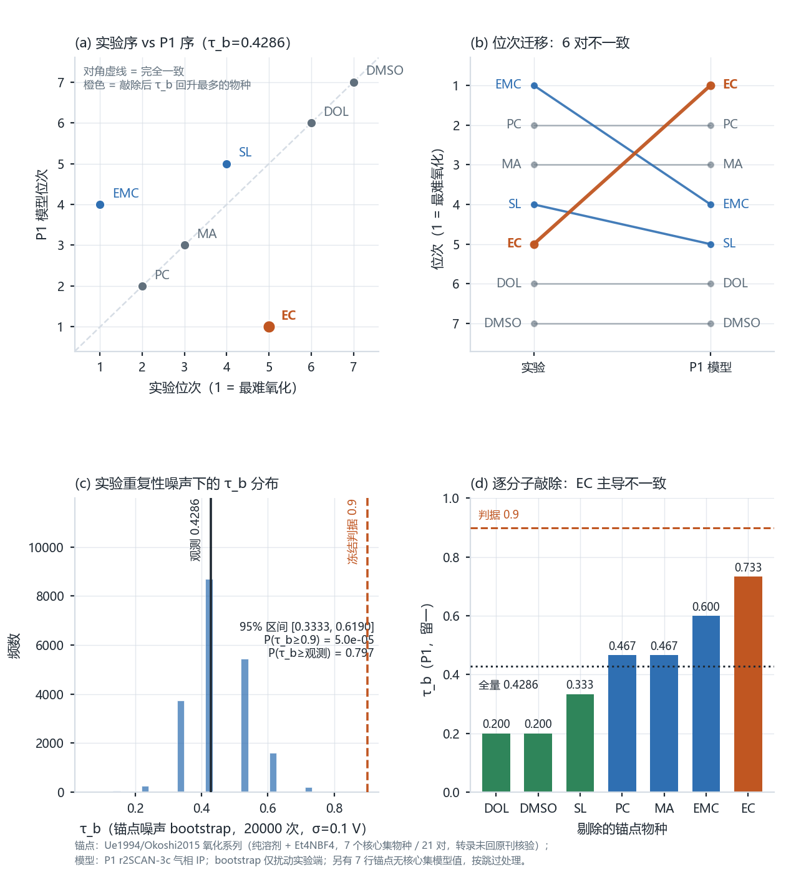
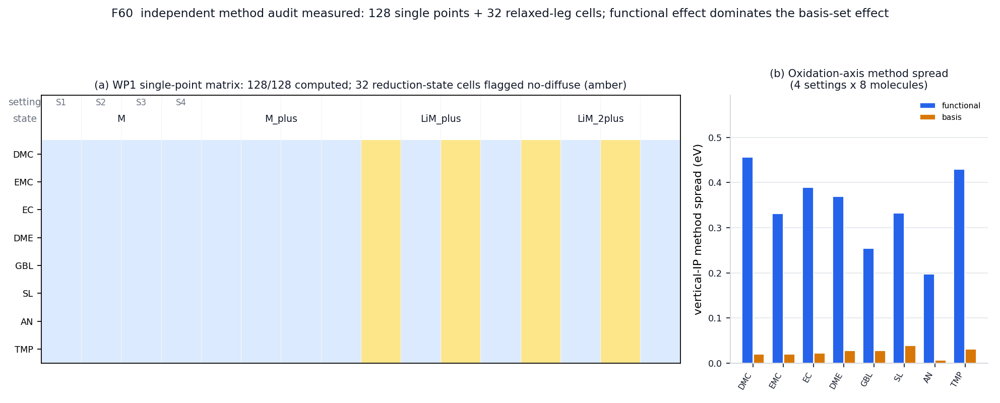
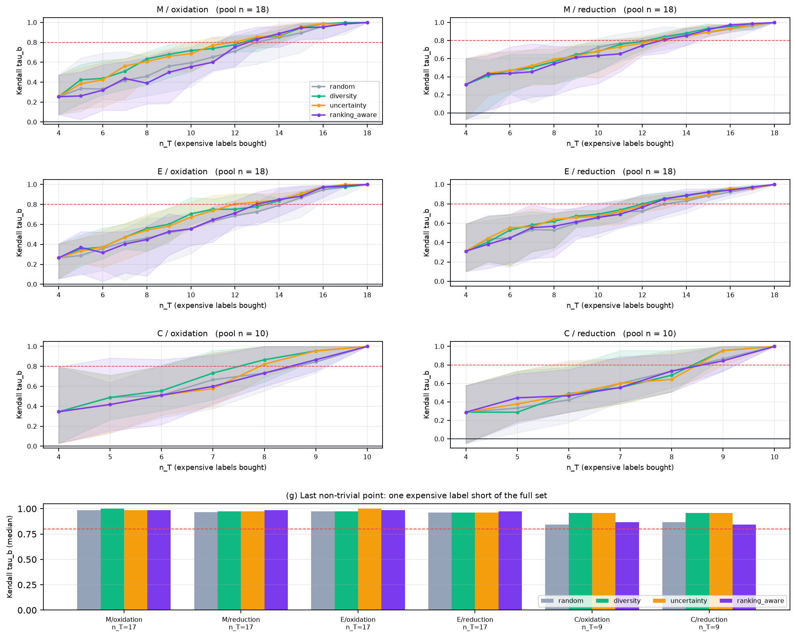

computational materials screening · decision stability
电解液溶剂的
决策稳定性研究
缺失的物理，何时只是数值平移，何时改变材料选择？ 从廉价代理到生产级自由能系综，保留每一步的证据、成本与尚未解决的问题。
值误差 ≠ 排序误差。计算完成 ≠ 科学验收。
历史研究档案：42 条阶段记录、1282 个 ORCA 作业、65 张图。18 + 40 分子的历史证据与当前 12 分子生产批次分层保存，不混用验收口径。
physics completion · WP2
当前进度，不等于最终完成
正常终止不等于科学闭环；主态固化交付 48/48，系综 provisional=0、limited=5。现有合规总体项：blocked_on_production。
前沿解析 80/80；证据表标记 verified 80/80。不代表独立完整科学身份 QC；自旋、轨道选择和布居口径仍需复核。现有合规总体项也不是完整 v3 严格目标证书；身份、WP5 与触发后的 WP6 必须另验。
查看 5 个未 accepted 态及限制原因
- AN/M_pluslimitedrescue_budget_exhausted
- DMC/M_pluslimitedrescue_budget_exhausted
- DMC/LiM_2pluslimitedrescue_budget_exhausted
- DOL/LiM_2pluslimitedrescue_budget_exhausted
- EC/LiM_2pluslimitedrescue_budget_exhausted
以上为已提交产物快照，不是实时 Slurm 队列；更新时间仅对应主态账本。

abstract
摘要
本研究以电解液溶剂的氧化还原描述符（IP / EA）与候选筛选决策为对象，化学空间为 core set 18 + broad pool 40 = 合并池 58 个分子。方法上以 GFN2-xTB 为廉价代理、 ORCA r2SCAN-3c 为 designated computational target，构建 P0 / P1 / P2 三层臂：相邻两层严格服从「唯一变量纪律」——P0→P1 只换电子结构方法，P1→P2 只换环境， 几何与构象在两臂间完全共享；IP / EA 全部取冻结几何 G1 上的三态垂直能量差，不做几何弛豫。
核心结论是：值误差不等于排序误差。GFN2-xTB ΔSCF 的值误差是 P0 的 3.3 倍， 排序一致性却最高（τ_b 0.911 对 0.606）；P1 的值误差最小（MAE 0.251 eV），排序一致性反而更低 （τ_b 0.727）。决定排序是否被改写的是位移的离散度 （ρ(shift std, τ_b) = −0.851），而不是位移幅度（ρ(|mean|, τ_b) = −0.535，置信区间跨 0）。
外部有效性状态：Gate 1 排序一致性层 τ_b = 0.4286 < 0.90、n_pairs = 21，判
ordering_disagrees，Gate 1 记为 NOT CLOSED 且 NOT CLOSABLE。
阶段三 physics_completion_v1 把「哪些缺失物理会改变候选选择、恢复选择需要多少
额外信息」推进到可复算载荷层，受生产计算进度限制尚未闭环。
contributions
主要贡献
- 把「决策稳定性」从定性担忧变成可算的量。给出
sigma_ij/f_unresolved/tau_b/ Top-k 重叠四个决策量， 并在 20 个点上验证闭式f_unresolved(z) = Pr(q_ij > √2/z)与实测误差 精确为 0。 - 确立「位移离散度决定排序」这一中心机制。 ρ(shift std, τ_b) = −0.851（不含 0），而 ρ(|mean|, τ_b) = −0.535（跨 0）。
- 给出一个花钱之前就能用的闭式判据。分辨率只由无量纲不等式
q_ij ≤ √2/z决定；带符号斜率ols_slope_b的 AUC = 1.000， 无符号sd(delta)仅 0.810——符号比幅度重要。 - 识别三条「免费通道」。层间刚性偏移、单调 1-Lipschitz 位移、自相似平移 （bare CPCM 介电扫描落在该族上，Born mean R² 0.9936，8 个介电台阶 τ_b ≥ 0.867 且无一改写清单）。
- 把外部有效性如实判为负结果。Gate 1 排序层 τ_b = 0.4286、 n_pairs = 21（一致 15 / 不一致 6），31 行溶液锚点升级 0 行—— 判 NOT CLOSED / NOT CLOSABLE，且明确该判定可被新数据证伪。
- 把「需要多少额外信息」推进到可复算载荷层。τ_b ≥ 0.80 需 n_T = 8–9（10 分子池）/ 12–15（18 分子池）；漏解容许量 A_axis = 0.1523 / 0.2860 eV，2·A_axis 严格界保护 120/120、漏检 0。
- 诚实标注一批否证性结论。事前预警规则 LOO 0.708 < 0.792
多数类基线；零成本自诊断留出臂 0.7963 < 0.9074 且真阳 0；
f_robust_inv ≡ 0是定义性结果而非「排序稳定」。
methods
方法与口径
三层臂与条件态
廉价代理 → 指定计算目标 → 外部参考，这条链不写成 cheap → truth。
P0 = GFN2-xTB（Koopmans 代理，气相）；P1 = ORCA r2SCAN-3c
（气相，ΔSCF 三态垂直量）；P2 = r2SCAN-3c + CPCM(SMD, 乙腈)。相邻两层之间
只有一个变量在变。条件态分三级：C0 = 自由分子；C1 = [LiM]⁺；
C2 = [Li(M)₂]⁺ 显式第一溶剂壳，参考配体 R = DME。
决策量
主判据是 config/prereg.yaml 冻结的 z = 1.0，z = 1.96
只作保守敏感性并列报告，两者不得混用、不得择优引用。pair 级判据为
resolved(i,j) ⇔ |ΔP_ij| ≥ max(z·σ_ij, delta_m)；
sigma_ij = |d_lower − d_upper| / sqrt(0.5)；方向口径为 ox = IP、
red = −EA（均 maximise）。缺值、不合格态、未完成 QC 的状态一律记为
None，绝不被替换成 0。
两套互不相干的编号
阶段二为评审实施方案 WP1–WP7，阶段三为 physics_completion_v1 的
WP0–WP6。例如 src/electrolyte_ranking/wp3.py 属旧体系 WP3，
与 docs/61_week40_wp3_pair_evidence_mechanism.md（新体系 WP3）没有关系。
历史不改写：config/scientific_definitions.yaml 原样保留（append-only）。
三层表述——模型事实 / 统计判定 / 材料意义——分列不混写；主结论一律带
Track A / Track B / 待验证推断标签。
cheap proxy
GFN2-xTB / P0 描述符：便宜的尺子
designated target
r2SCAN-3c 垂直 IP / EA：贵的尺子
rank change
τ_b、f_unresolved、robust inversion：排序到底动了没有
mechanism
位移的代数结构与环境层的四项精确分解
minimal budget
主动学习回放：多少算力才够
results
结果
① 值误差 vs 排序误差
三臂与外部气相锚点比较给出了本项目最反直觉的一组数：ΔSCF 的值误差是 P0 的 3.3 倍， 排序一致性却最高；P1 的值误差最小，排序一致性反而低于 ΔSCF。这说明 把一个臂的 MAE 当作它的决策质量是错的。把三条臂对齐到同一批 10 分子后 复现了同一格局：GFN2 ΔSCF τ_b 0.9111 > P1 0.7778 > P0 0.6889，但配对 Δtau_b 的 95% CI [−0.200, 0.550] 跨 0（精确置换 p = 0.8049），三条臂在统计上两两不可区分。
MAE 1.377 / 4.481 / 0.251 eV；τ_b 0.606 / 0.911 / 0.727；配对 Δtau_b 95% CI [−0.200, 0.550]，p = 0.8049

② 位移离散度决定排序
四级台阶同口径对照显示：环境台阶的平均位移比方法台阶大 54%，但分子间离散度 只有方法台阶的 41%，于是排序被破坏得更少。最锋利的对照出现在 五级台阶合成：P0→P1 还原轴位移最大（+7.064 eV，std 2.253）却保住排序（τ_b 0.600）， C0→C1 还原轴位移相仿（−6.578 eV，std 0.832）却换号（τ_b −0.467）。 结论是：位移更大不等于决策更坏；决定决策是否被改写的是位移的方差。
P0→P1 std 0.714 eV、τ_b 0.673；P1→P2 std 0.293 eV、τ_b 0.895； G1→G2 std 0.049 eV、τ_b 0.939；C0→C1 std 0.564 eV、τ_b 0.689； ρ(std, τ_b) = −0.851、ρ(std, f_unresolved) = +0.894

③ sigma 闭式与事前判据
sigma_ij 不是经验量，它有闭式：sigma_ij = |delta_i − delta_j| / sqrt(2)，
逐对 RMS 恰等于逐分子位移的样本标准差，对层间刚性偏移严格不变。更进一步，
f_unresolved(z) = Pr(q_ij > sqrt(2)/z)，其中 q_ij 是位移对目标轴的
割线斜率；闭式与实测在 z = 1 与 z = 1.96 的 20 个点上误差精确为 0。
因此「这一级台阶会不会把排序糊掉」可以在开跑前用一条无量纲不等式算出来。
闭式误差 0（20 个点）；ols_slope_b AUC = 1.000、精确置换 p = 1/120、
LOO 10/10；无符号 sd(delta) AUC 仅 0.810

④ 三条免费通道
层间刚性偏移免费（均匀平移不改排序）；单调 1-Lipschitz 位移免费
（τ_b = 1 与 f_unresolved = 0 同时成立）；自相似平移免费（若
delta(ε) = c(ε)·delta₀，则 sd / b / q 同因子缩放，b 符号不变、决策只会越来越稳）。
bare CPCM 介电扫描正落在这条通道上——尽管 gas → 5 的位移均值 1.885 eV 比
P1→P2 / G1→G2 / C0→C1 / C1→C2 都大，8 个介电台阶全部良性、无一改写清单。
另有一条态的刚性偏移：SMD CDS 项在三个电荷态上逐点相同，对任何垂直 IP / EA 的贡献
精确为 0。
Born mean R² 0.9936（Onsager 对照 0.8835）；8 个介电台阶全部 b > 0、 τ_b ≥ 0.867；ε = 200 距导体极限仅 0.0037 eV

⑤ 还原侧定性失效
P1 下 18 个分子的气相阴离子全部不束缚。定域在 LUMO 上的 Koopmans 图像在结构上 不可能给出这一点，因此 P0 还原轴与真实 EA 不是同一物理量。 P0→P1 还原 τ_b（0.595）低于氧化（0.673），但还原轴 Top-10% 重叠却高达 1.000——这属于 伪一致，不可解读为代理可靠。方法适用域进一步给出边界：同一泛函只换基组、 加弥散（def2-TZVPD）会把气相 EA 系统性下拉 0.34–1.60 eV；AN（0.011 eV）与 DMSO（0.014 eV） 的锚点比任何 DFT 泛函的误差棒低两个数量级，本方法不能裁断 0.01 eV 量级的阴离子束缚 与否。氧化侧（IP）不受此限制。
unbound_anion = 18；还原 τ_b 0.595 vs 氧化 0.673；Top-10% 重叠 1.000；
C0→C1 还原 τ_b = −0.467

⑥ 外部有效性判负（Gate 1）
Gate 1 分两层。排序一致性层首次可评但未通过：同源氧化系列 7 个核心集分子、
21 对，Kendall τ_b = 0.4286 < 0.90，判 ordering_disagrees（一致 15 / 不一致 6）。
绝对标定层：31 行溶液相锚点仍全部为 est，升级 0 行，按 R7 裁决记为
limitation，不再单列 blocker。预注册 8 条关闭条件满足 5 条、未满足 3 条，τ_b < 0.90 是
唯一决定性否决项。还原轴旁证只有 3 个 pair（门槛 18），是「数据不足」而非「不一致」。
NOT CLOSABLE ≠ NO SUCH DATA EXIST ANYWHERE。
该负结果可被日后满足全部预注册条件的同源序列直接推翻；禁止事后通过剔除分子 / 替换模型列 /
放宽容差把它「救」成 PASS。
τ_b = 0.4286、n_pairs = 21（15 / 6）；绝对标定 0 / 31；还原旁证 3 对 < 18

⑦ 物理补全批次：方法审计与自由能标签
阶段三 physics_completion_v1 把「哪些缺失物理会改变候选选择」推进到可复算载荷层。
WP1 独立方法审计完成 8 分子 × 4 状态 × 4 设定 = 128 个本机单点，另加
32 格阳离子弛豫腿，全部收敛；泛函效应远大于基组效应，
且选方法不按翻转数量。WP2 以 48 行状态账本登记真实 Opt+Freq 自由能标签，
已完成 43/48，未完成的主态保持空串（None），未把缺值写成 0。
四分子（DMC、EMC、GBL、SL）闭环：主态登记 16/16、基组一致中性腿 M_tzvpd 4/4。
口径明写：方法轴认证只覆盖固定几何上的电子能层，不自动外推到溶液优化几何或
自由能层。
128 单点 + 32 弛豫腿全部收敛；WP1 验收 14/14、WP2 验收 23/23； 主态登记 43/48；四分子主态 16/16、M_tzvpd 4/4

⑧ 最小昂贵信息预算
合成口径是：先算第一壳的分子、用闭式判据筛台阶、介电层稀疏化、漏解只做靶向。
闭式判据在开跑前预判；介电层是 Born 单参数族，残余按 |dE|·ε ~ 2.1 eV 幂律衰减，
可稀疏采样；配位层 1:1 → 1:2 → 1:3 增量同号且绝对值递减，真正要算的是第一壳；漏解层用容许量
A_axis 框住，全序翻倍可换成靶向。但预算结论有硬边界：
family-held-out 的主动学习曲线不可用，池内曲线饱和绝不等于跨家族泛化，
任何「买 X 张 DFT 就够了」的说法在本口径下都不成立。
A_axis = 0.1523 / 0.2860 eV，2·A_axis 保护 120/120、漏检 0；靶向规则抓住 19/21 次 真实翻转、漏 0；只保护 Top-k（k = 1/2）可省 91.7% / 83.3%；τ_b ≥ 0.80 需 n_T = 8–9（10 池）/ 12–15（18 池）

关键数字一览
| 指标 | 数值 | 出处 |
|---|---|---|
| 化学空间 | core set 18 + broad pool 40 = 合并池 58 个分子 | docs/05_stage2_broad_pool_p0.md |
| 三臂值误差 MAE | P0 Koopmans 1.377 eV / GFN2 ΔSCF 4.481 eV / P1 r2SCAN-3c 0.251 eV | FINAL_CONCLUSIONS.md |
| 三臂排序一致性 τ_b | 0.606 / 0.911 / 0.727（值误差最小的臂排序一致性不是最高） | FINAL_CONCLUSIONS.md |
| 中心机制 | ρ(位移离散度, τ_b) = −0.851；ρ(|位移均值|, τ_b) = −0.535 | FINAL_CONCLUSIONS.md |
| 分辨率闭式 | f_unresolved(z) = Pr(q_ij > √2/z)，与实测在 20 个点上误差精确为 0 | FINAL_CONCLUSIONS.md |
| 气相阴离子不束缚 | P1 下 18/18 全部不束缚 → 还原侧 Koopmans 代理定性失效 | README.md |
| Gate 0 | CLOSED（定义与预注册冻结，amendment_log 为空） | outputs/week1/gate0_record.md |
| Gate 1 | NOT CLOSED 且 NOT CLOSABLE：τ_b = 0.4286 < 0.90、n_pairs = 21（一致 15 / 不一致 6） | docs/gate1_negative_result.md |
| Gate 1 绝对标定层 | 溶液锚点 31 行仍全部为 est，升级 0 行 | docs/gate1_negative_result.md |
| WP1 方法审计 | 128 个单点 + 32 格阳离子弛豫腿，全部收敛；验收 14/14 通过 | docs/59_week38_wp1_method_audit.md |
| WP2 主态登记 | 48 / 48 个主态通过严格科学 QC（缺值保持为空，未写 0） | docs/60_week39_wp2_free_energy_labels.md |
| 四分子闭环 | 主态登记 16/16、基组一致中性腿 M_tzvpd 4/4 | outputs/physics_completion/closure/closure_summary.md |
| 方案合规运行进度 | 60 / 60；科学验收（四主态）48 / 48；总体判定未闭环（blocked_on_production） | outputs/physics_completion/compliance/plan_compliance.md |
| 最小昂贵信息预算 | τ_b ≥ 0.80 需 n_T = 8–9（10 分子池）/ 12–15（18 分子池） | FINAL_CONCLUSIONS.md |
limitations
局限与边界（不得在对外表述中省略）
- 还原侧定性失效：P1 气相阴离子 18/18 全部不束缚，Koopmans 还原代理与真实 EA 不是同一物理量，还原轴结论只以 P2 / C1 为载体。
- 基组无弥散：r2SCAN-3c 的 def2-mTZVPP 不含弥散函数，不能裁断 0.01 eV 量级的 阴离子束缚与否；氧化侧不受此限制。
- 单构象 + 两级几何：主结果建立在 GFN2-xTB 单构象几何 G1 上，未做全局构象搜索； G2 台阶仅在 12 分子审计子集。
- Gate 1 未闭合且 NOT CLOSABLE：τ_b = 0.4286 < 0.90；且
NOT CLOSABLE ≠ NO SUCH DATA EXIST ANYWHERE。 - 池内饱和 ≠ 跨家族泛化：
family-held-out的 AL 曲线不可用， 池内 τ_b = 1.0 是自检端点而非成绩。 f_robust_inv ≡ 0不是稳定：20 个 (台阶, 轴) 组合全为 0， 但同批数据 f_unresolved 最高 0.800，这个 0 是「不可判定」而非「稳定」。- 事前预警不可用：池化冻结规则 LOO 0.708 < 多数类基线 0.792，留出臂真阳 0； 零成本自诊断留出 0.7963 < 0.9074、真阳 0。
- n = 18 只支撑四层里的三层：机制验证可以成立，排序普适性不能宣称， 大规模筛选未验证。
- 三臂统计上不可区分：配对 Δtau_b 95% CI [−0.200, 0.550] 跨 0， 精确置换 p = 0.8049。
- 生产未闭环：
plan_overall_complete = blocked_on_production， 主态 43/48、生产系综 0/48、free_labels 9/12、li_labels 8/12、flip_rungs 8/12。 - 方法轴认证范围有限：只覆盖固定几何上的电子能层，采样界限未纳入， 不自动外推到溶液优化几何或自由能层。
- 外部锚点为
transcription_only：31 行仍为 est，仓库没有独立复核过 任何一行，且 21 个 pair 不是 21 个独立实验样本。
timeline
阶段记录
三个阶段、每条记录一句话。每一行是一个阶段：这一阶段只允许一个变量改变， 链接指向仓库里对应的报告原文。
阶段一 · 计划 v1
代理量 → 决策稳定性（Stage 0–24）
从 GFN2-xTB 廉价代理走到 r2SCAN-3c，用「唯一变量纪律」逐层追问哪一级会改写筛选决策。
-
Week 1–2 Stage 0
预注册与定义冻结
-
Week 2 Stage 1
外部锚点、方法审计与工具链自检
-
Week 3 Stage 2
廉价层 P0、覆盖检查、锚点核验、ORCA 就绪
-
Week 4 Stage 3 + T1
r2SCAN-3c 电子结构层与 P0 -> P1 决策稳定性
-
Week 5 Stage 5 / T4
Li+ 配位条件态 C1（机制解释）
-
Week 6 Stage 6
不确定性感知排序分析
-
Week 7 Stage 7 + Stage 8
ML / direct vs delta-learning 与 active-learning replay
-
Week 8 Stage 9
显式微溶剂化（C2 = [Li(M)2]+ 第一溶剂壳复核）
-
Week 9 Stage 10
五级台阶合成与决策稳定性总判
-
Week 10 Stage 11
sigma 的代数解剖与分辨率判据
-
Week 11 Stage 12
介电响应是一条单参数族，判据可事前使用
-
Week 12 Stage 13
介电极限、导体极限，与环境位移的四项精确分解
-
Week 13 Stage 14
畸变项的定量归因与 EMC 离群点的病理裁决
-
Week 14 Stage 15
初猜协议修正亚稳态、弥散度描述符翻正否定结果
-
Week 15 Stage 16
亚稳解是全核心集现象，但单一气相描述符的事前预警输给平凡基线
-
Week 16 Stage 17
P2 腿换 moread 初猜重算 54 格，无任何已发布结论被改写；32 个漏解格两解皆自旋纯双重态，差异主轴是电荷重组
-
Week 17 Stage 18
零新增作业：全目录 414 对身份普查闭合（可测 276 对 AUC 1.000、规则不一致 0 对）；零成本自诊断的冻结规则在留出臂输给多数类（TP 0）
-
Week 18 Stage 19
37 个 moread_lower 格各让两条 SCF 解做几何弛豫（74 个 Opt 作业）：5/37 仍保持 moread 更低、8/37 在终点合并为同一电子态、32 格单点偏好被几何反转；|Delta| 中位 0.11983 -> 0.00196 eV
-
Week 19 Stage 20
「第二解」不是一个「廉价方法也能独立复现」的概念，而是一个必须由昂贵方法定义、廉价方法只能在给定几何上读出的概念。
-
Week 20 Stage 21
把 Stage 19 最脆的 0.021–0.100 Å 带换成能量尺子重读，被判 distinct_lower 的 EC/cation/ε=5 其实是一条无鼓包的直线路径（相对弦最大 0.00424 eV ≪ k_B T = 0.0257 eV）——RMSD 阈值把它过度判定成了两个解。
-
Week 21 Stage 22
把三臂对齐到同一批 10 个分子之后，ΔSCF 的 τ_b 仍是三者最高（0.911 vs 0.778 vs 0.689），但与另外两臂的差距在配对检验下全部跨 0（配对 95% CI [−0.200, +0.550]，精确配对置换 p = 0.805）——所以从本周起，项目对外只能说「MAE 的排序与 τ_b 的排序不一致」，不能说「ΔSCF 的排序显著更好」。
-
Week 22 Stage 23
R11 用真 NEB 取代直线插值之后，Stage 19 判成「两个盆地」的 EC/阳离子/eps=5 一格峰高只有 0.141 meV（直线界 4.245 meV 的 1/30）；同周 R4b 又把「介电层免费」量化成一条 |dE| x eps = 2.1 eV 的幂律，eps = 200 的残余只剩 19.6 meV，是氧化轴 delta_m 的 2.80%。
-
Week 23 Stage 24
R8 把「漏解要不要全局双算」压成一条安全定理——|d0-d1| <= A_axis，任何 |d0| >= A_axis 的 pair 都不可能翻转，实测 19/660（氧化）与 21/660（还原）次翻转 0 漏；R12 把三条结论合并成对 v2「minimal information budget」的定性回答。
-
Week 24 W24-C
核心文件与结题论文之间的方法缺口在本周闭合：ML / 主动学习从 Stage 7/8 产物蒸馏为论文 §3.13–§3.14（接入 F48、F49），决策量补成 20 个组合的可核数值，并新增 F51 最小信息预算决策流程图；本周零新增电子结构计算。
-
Week 25 W25-G1
Gate 1 排序层判据的状态从 "无数据（no_within_series_values）" 变为 "已评估且不一致（ordering_disagrees）"：7 个同系列溶剂、21 对给出 Kendall τ_b = 0.4286 < 0.90，判据首次可评但未通过；还原轴只有 3 对旁证；本周零新增电子结构计算。
阶段二 · 评审实施方案
WP1–WP7 + 论文 v7 结题
把散落产物收敛成可复核的证据主表，回答 RQ1–RQ4，并把结论边界定死。
-
Week 28 WP1 · 证据主表
统一科学证据主表
-
Week 29 WP2 · RQ1
哪些电子结构与介质物理改变候选排序
-
Week 30 WP3 · RQ2
Li+ 配位条件态机制与状态身份
-
Week 31 WP4 · RQ3
决策可识别性与筛选稳健性
-
Week 32 WP5 · RQ4a
Δ-learning 与跨家族泛化
-
Week 33 WP6 · RQ4b
最小昂贵信息预算（主动学习）
-
Week 34 WP7 · 边界
外部验证与结论边界（Gate 1 复核）
-
Week 35 Paper
论文主文收敛包（七图 / 六节 / 数字溯源 / 边界声明）
-
Week 36 结题提交
论文 v7 成品 + 生成与溯源脚本 + 独立数字审计 + WP1–WP7 对照映射（仓库内没有 outputs/week36：成品由 scripts/build_week36_final_submission.py 生成到交付层）
阶段三 · physics_completion_v1
WP0–WP6 物理证据补强与决策预算
追问「哪些缺失物理会改变候选选择、这种变化是否超过独立方法敏感性、恢复选择需要多少额外信息」。
-
Week 37 WP0 · 定义迁移
把仓库外执行方案登记为可追溯新批次，只登记定义与样本（零新增电子结构计算）
-
Week 38 WP1 · 方法审计
矩阵与规则冻结并本机实测：128 个单点全部收敛 + 32 格阳离子弛豫腿
-
Week 39 WP2 · 自由能标签
48 行生产模板中已登记 43/48 个主态的真实 Opt+Freq 账本行（缺值不写 0）
-
Week 40 WP3 · 排序与机制
三态判据与保守区间协议已冻结，并在既有 rung（P1v→P1a 氧化，n=12）上逐对复算
-
Week 41 WP4 · 锚点可比性
既有锚点三级分类完成；7 个氧化锚点逐条重算，旧结论原样保留
-
Week 42 WP5 · 增量学习与主动查询
任务定义、泄漏防线与成功端点在回放前冻结；既有 Δ-learning / AL 表已复算
-
Week 43 WP6 · 显式配体
可选 WP6 协议已登记；Li 配对 complete >= 9/12 且生产系综 = 48/48 时自动升级为计划内
-
Week 44 结题提交包
结题提交包：收结题报告、协议、配置、样本、锚点审计、仓库骨架图、生成器源码、测试与全部 outputs/physics_completion/**
data & code
数据与代码可得性
交付镜像按成果种类分组，位于仓库 deliverables/；源码在
src/electrolyte_ranking/，生成与校验脚本在 scripts/，冻结定义与预注册在
config/，元数据与外部锚点在 data/，几何在 structures/，
回归测试在 tests/。技术报告与周报在 docs/，图在
outputs/figures。
交付镜像只放蒸馏产物与图，原始 ORCA / xTB 输出与二进制 scratch 留在仓库 outputs/；
镜像内容由各自的 SHA256SUMS_新结构.txt 独立担保，可按生成脚本确定性重建。
| 目录 | 职责 | 文件数 |
|---|---|---|
src/electrolyte_ranking/ |
可复用库：ORCA / xTB 驱动、不确定度、排序、稳健性、决策状态 | 18 |
scripts/ |
生成器与校验脚本（顶层入口 + wp_production/ 生产子包） | 252 |
config/ |
冻结定义与预注册（scientific_definitions.yaml、prereg.yaml） | 4 |
data/ |
元数据、外部锚点与参考文献 | 20 |
structures/ |
起始几何：构象池、Li 配位 motif、微溶剂化 | 57 |
outputs/ |
全部产物：逐阶段载荷、physics_completion/、figures/、溯源与合规 | 7616 |
tests/ |
pytest 契约：生成器 --check、镜像一致性、冻结哈希、脚本索引 | 147 |
docs/ |
技术报告与周报（NN_*.md）、协议、结题报告、站点 | 151 |
deliverables/ |
交付镜像（按成果种类分组）：part1 = Stage 0–24，part2 = 评审 WP1–WP7 + physics_completion_v1 | 1286 |
复现与校验
站点自身的每个数字都由 scripts/build_terminal_site.py 从仓库产物现场读出，
--check 会逐区域复核页面与 payload 是否仍与仓库一致：
python scripts/build_terminal_site.py --check
交付镜像的完整性用各自的清单复核：
sha256sum -c deliverables/part2/09_校验与清单/SHA256SUMS_新结构.txt。
仓库内测试用 python -m pytest tests -q。